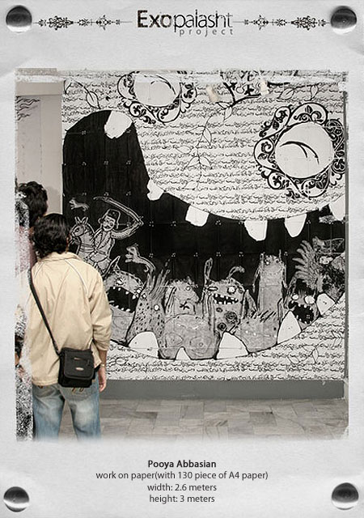
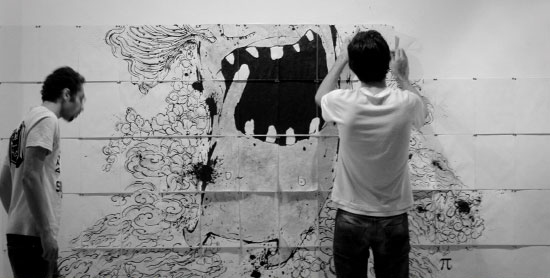

EXOPALASHT (2007)
EXOPALASHT
project By Pooya Abbasian & Farshid Monfared
This exhibition was held in AZAD Art Gallery in Oct 2007,
It had a critical view toward self exoticism. On inauguration day an audio performance was presented by a group of people.
It can be said that recently works of many Iranian artists are distinctive cliché.
Most of them are applying traditional and national Oriental (Iranian-Islamic) patterns as a tool to attract foreign audiences.
As a matter of fact some of these works quench overseas viewers thirst toward exotic are More over Exotic works are also applicable to their hypothesis about oriental artists works. As a result Western audiences pay special attention to exoticism. The theorem is neither ignoring all these achievements nor finding these artists guilty for using these symbols in their work The works in this exhibition are criticizing superficial and abusive use of these traditional patterns and national symbols and turning them to meaning-less cliché.
Hamid Severi Oct. 2007


- 


- 